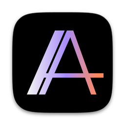
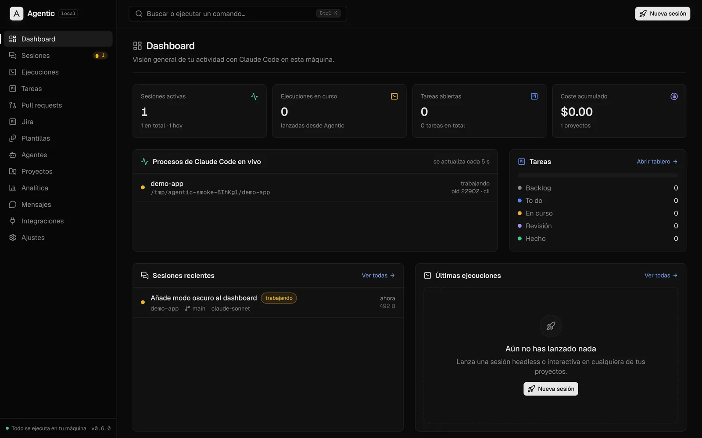
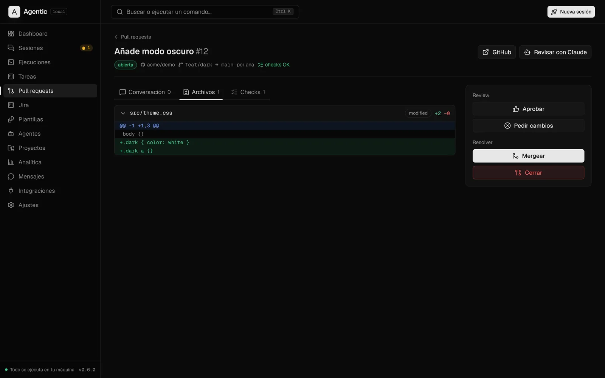
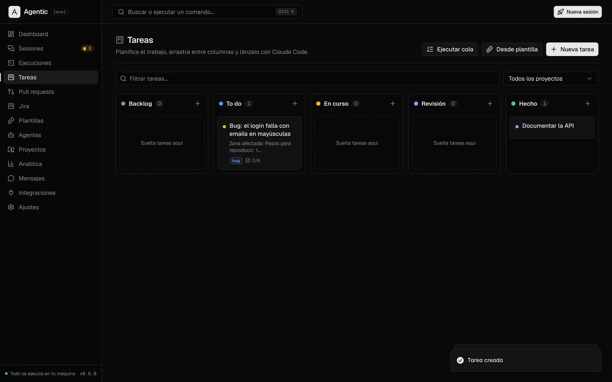
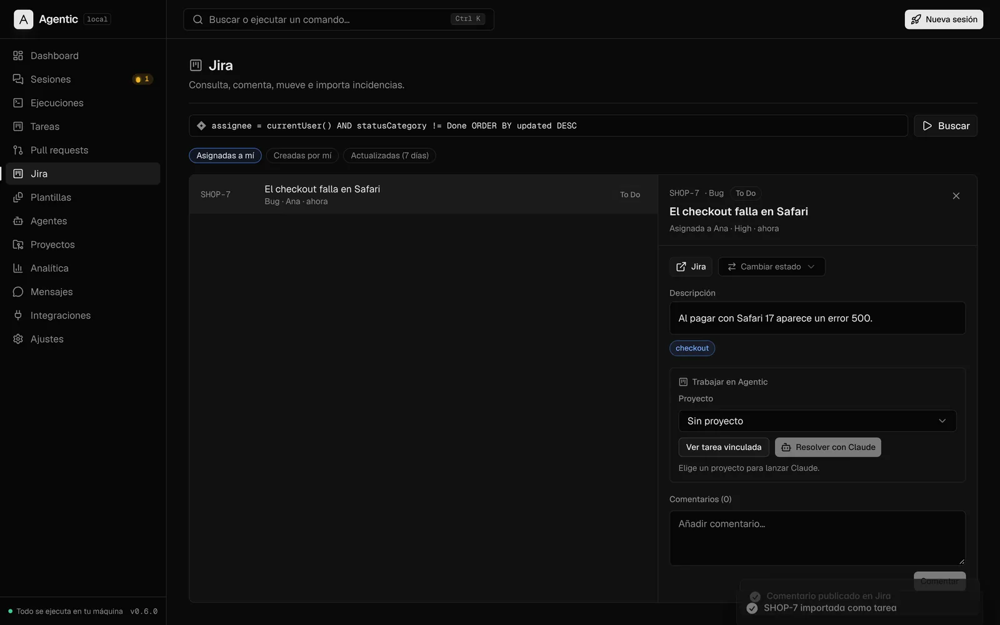
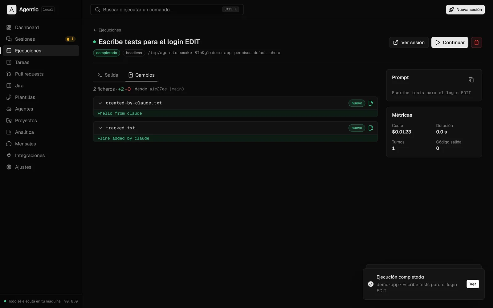
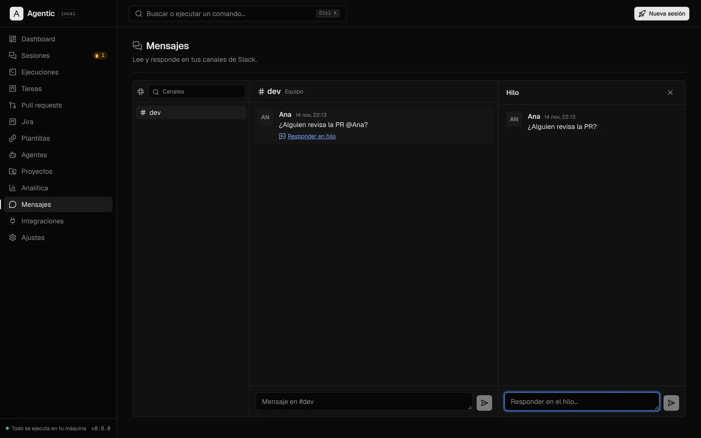
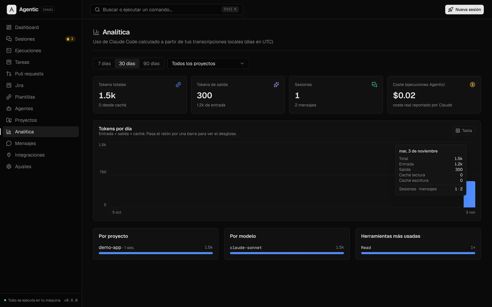

Sesiones en vivo
Todas tus conversaciones de ~/.claude, su estado en
tiempo real, transcripciones, tokens y búsqueda de texto completo.

AgenticTodo se ejecuta en tu máquina
Sesiones en vivo, agentes, tareas autónomas, pull requests de GitHub y Bitbucket, Jira y Slack en una sola app para macOS, con Touch ID y un asistente de IA local.

Todas tus conversaciones de ~/.claude, su estado en
tiempo real, transcripciones, tokens y búsqueda de texto completo.
Ejecuciones en segundo plano con log en directo o sesiones interactivas en tmux, con el diff de lo que cambió Claude.
Kanban con plantillas y una cola que ejecuta tus tareas una a una, con límites, presupuesto y parada ante fallos.
GitHub y Bitbucket en una bandeja: diff, checks, reviews, comentar, aprobar y mergear sin salir de la app.
Busca, comenta y mueve incidencias; lee y responde canales e hilos; convierte mensajes en tareas.
Ollama para resumir sesiones y redactar PRs, y dictado por voz con Whisper, todo en tu Mac.






Diseñada según OWASP ASVS 5.0 (nivel 1) y la lista de seguridad de Electron · revisión propia, sin auditoría externa · ver controles
.dmg para tu Mac y arrastra
Agentic a Aplicaciones.
xattr -dr com.apple.quarantine /Applications/Agentic.app
claude
en tu terminal).